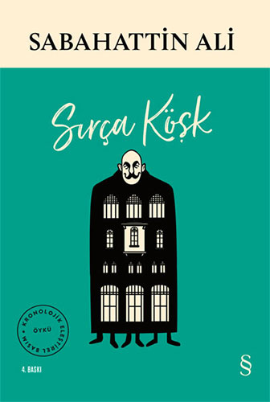

Kürk Mantolu Madonna
1943 – Aşk, yalnızlık ve içsel çözümlemelerle dolu etkileyici bir roman.

İçimizdeki Şeytan
1940 – İnsan karakterinin zayıflıkları üzerine düşündüren bir eser.
Kuyucaklı Yusuf
1937 – Anadolu'nun taşrasında geçen, güçlü bir karakter analizi.

Değirmen
1935-Sabahattin Ali’nin ilk öykü kitabıdır. Toplumcu gerçekçi yazarlığa geçişinin izlerini taşır.

Yeni Dünya
1943-Anadolu insanının yaşamı, yoksulluk ve toplumsal eşitsizlik temalarını işler.

Sırça Köşk
1947 (ölümünden sonra yayımlandı)- Masalsı bir dille yazılmış bu öykü, aşkın büyüsünü ve zamanla kurulan bağları sade ama derin bir anlatımla işler.